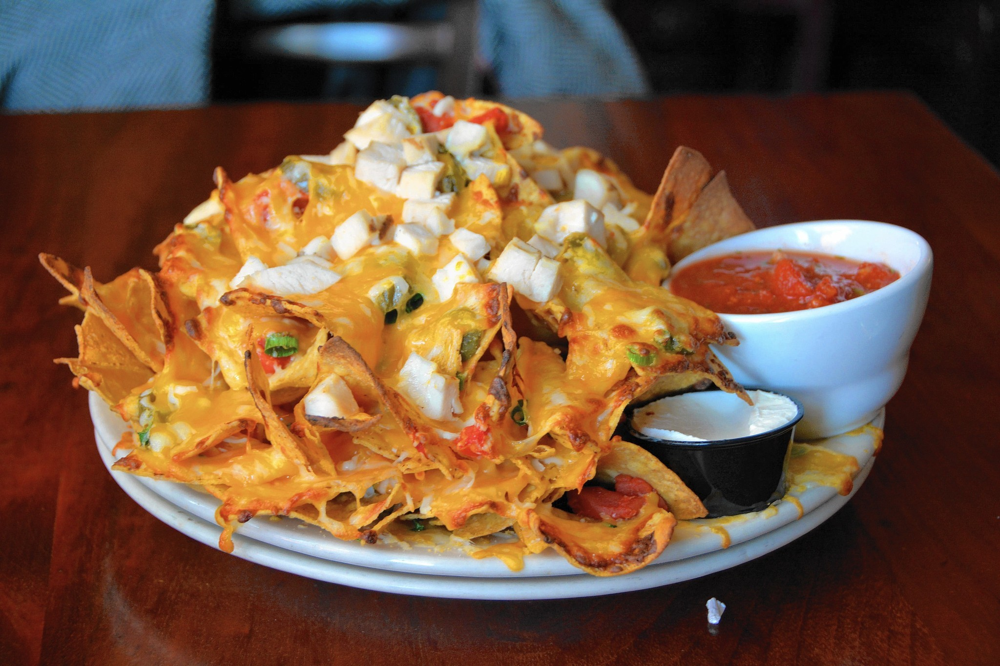
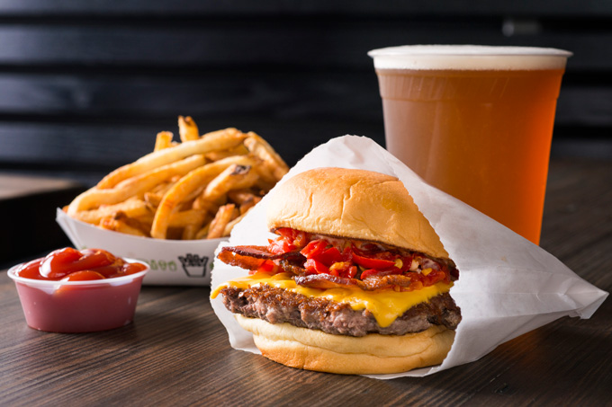

These are my favorite chicken nachos at Rodrigo's Mexican restaurant.
Rodrigo's is a small Mexican restaurant located in Hackensack NJ. It was founded by Carlos Rameriez in 1994 as a testament to father's traditional Mexican cooking.
My favorite burger is the Smoke Shack from Shake Shack.
Shack Shack is a huge international business with locations from NYC to Bahrain. Shake Shack started as a hot dog cart in central park from 2001-2003 and then would found itself as a kiosk in 2004 and proceed to grow to the business it is now by making quality hamburgers.
Back to Home